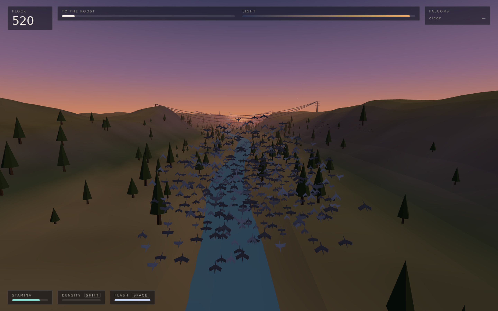
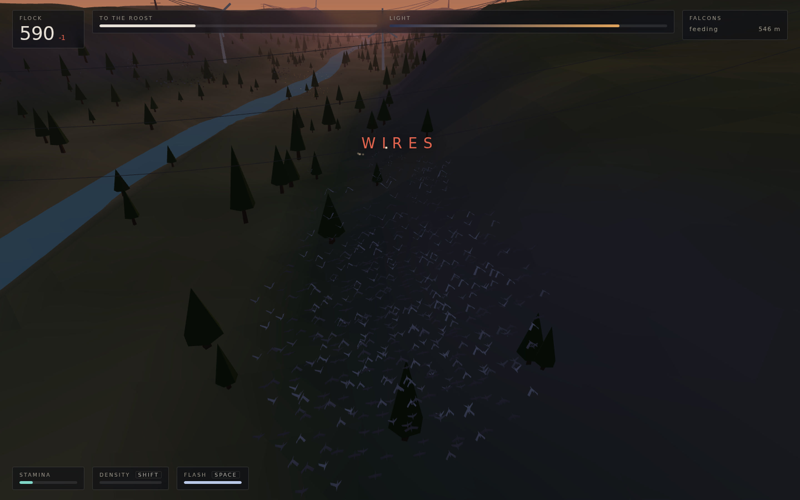
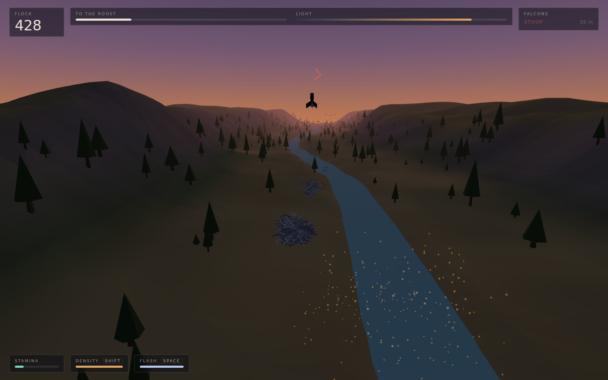
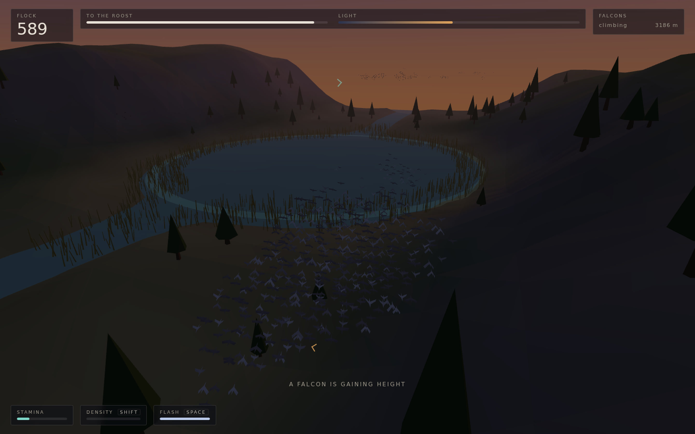
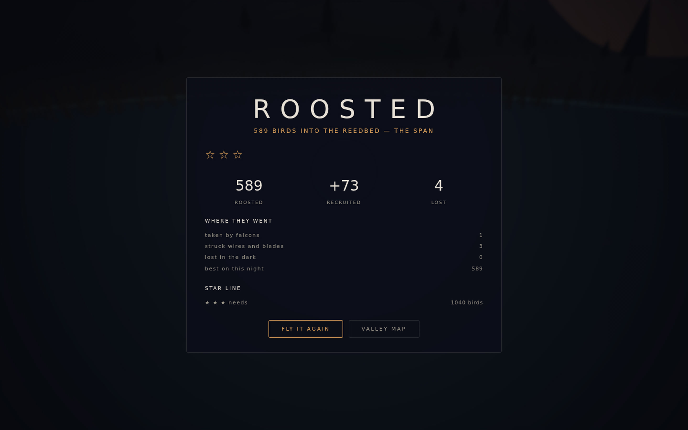

You are not a bird in the flock.
You are the flock.

1,800 starlings, each one simulated.
The birds are the health bar.

A peregrine’s strike collapses against a crowd.
Density is your armour.

Flash expansion is your parry.
Time it right and the falcon closes on air.

VESPER
You are not a bird in the flock. You are the flock.